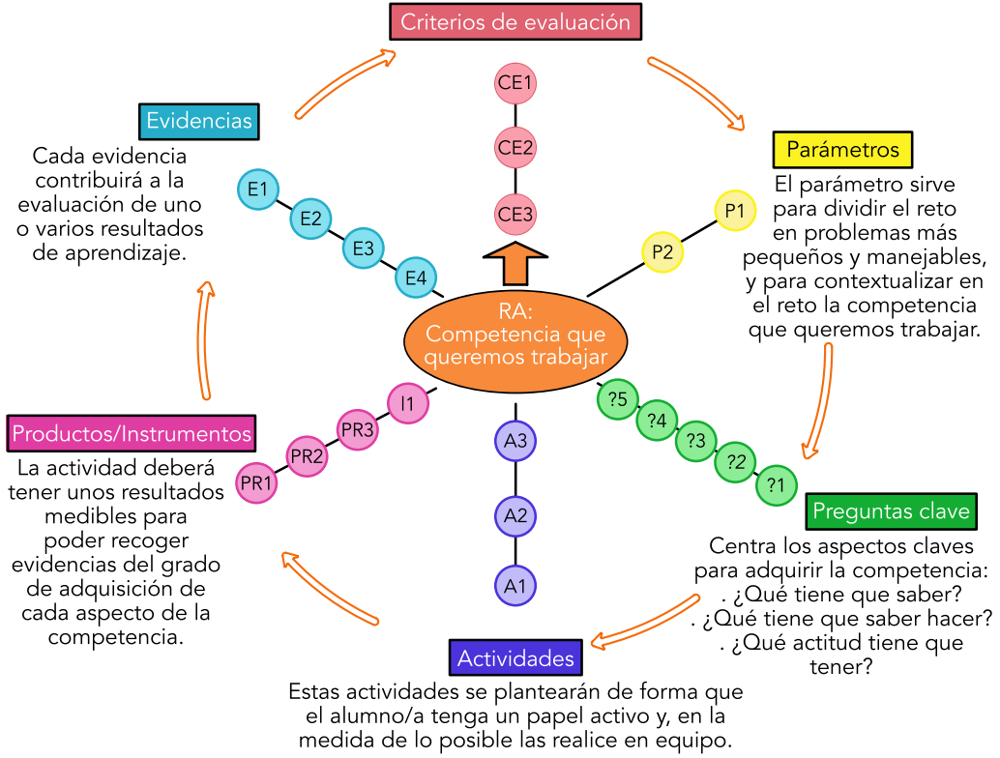
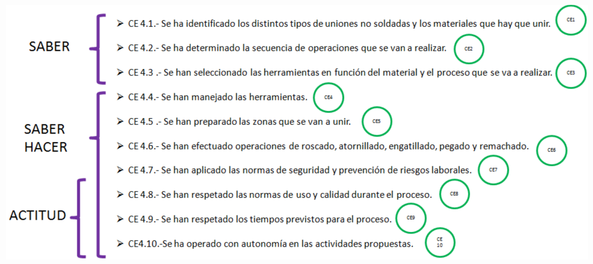
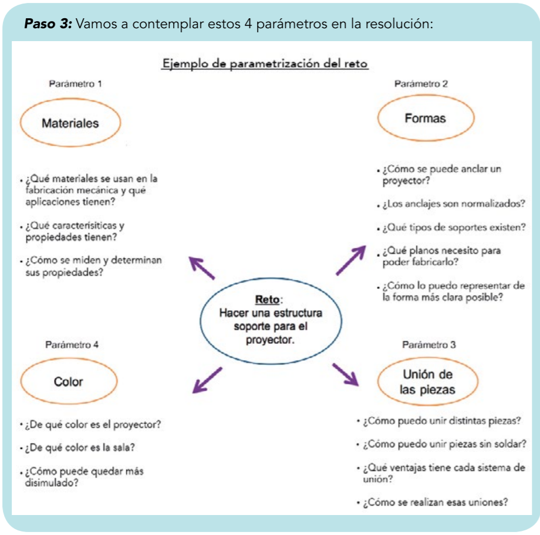

Rueda de planificación
Mira este vídeo

Vamos a verlo en nuestro ejemplo:
Fase 1 Identificar el Resultado de aprendizaje RA en nuestro caso Uniones no soldadas
Fase 2 Criterios de Evaluación CE de este Recurso de Aprendizaje RA. No es necesario trabajar todos los CE de un RA.

Fase 3 Parametrización visto en en paso 3

Fase 4 Preguntas clave Luego trabajamos los parámetros y las preguntas clave. Por ejemplo en nuestro reto anterior podría ser
| Parámetro | Pregunta clave |
|---|---|
| Materiales | ¿Qué tipos de materiales comerciales se dispone para...? |
| Unión de piezas | ¿Cómo puedo unir las piezas sin soldar? ¿Qué ventajas y características presentan los distintos tipos? ¿Dónde se aplican estas uniones? ¿Cómo se realizan? |
| etc ... |
Luego el paso que requiere más imaginación las actividades
Fase 5 Actividades Parámetro 3 Unión de piezas:
- Realizar una clasificación de las uniones no soldadas, indicando sus ventajas y aplicaciones.
- Realizar una unión adhesiva a partir de 3 pletinas.
Fase 6 Diseño de productos e instrumentos de evaluación
| Actividad | Producto |
|---|---|
| Realizar una clasificación de las uniones no soldadas, indicando sus ventajas y aplicaciones. | 1.-Realizar un mural tamaño A1 donde se clasifiquen las distintas técnicas, indicando las características de cada una y sus aplicaciones más conocidas. 2.- Exposición oral explicando al resto de la clase la información del mural. |
| Realizar una unión adhesiva a partir de 3 pletinas. | La propia unión, ellos tienen que buscar la información, encontrar distintos procedimientos, elegir el más adecuado para su situación y aplicarlo |
Como ejemplo de instrumento, recomendamos preparar un cuaderno de observación para que tú o el equipo didáctico, podáis anotar aspectos de cómo se realiza la actividad (si se realiza o no con autonomía (C.E.10), si respeta las normas de seguridad del proceso (C.E.7),(...). Es decir aspectos que no se pueden apreciar en el producto final.
Fase 7: Elección de las evidencias.
Se pueden recoger una evidencia de un solo CE
| CE Critero de Evaluación | Actividad | Producto | Instrumento | Evidencia |
|---|---|---|---|---|
| Realiza la unión con autonomía... | Realizar unión roscada | Entrega de la unión roscada | Cuaderno de observación | Ayuda o no para realizar la unión |
Se pueden recoger diferentes evidencias para un CE
| CE Critero de Evaluación | Actividad/Producto/Instrumento/Evidencia |
|---|---|
| Identifica los tipos de uniones no soldadas | Mural o Presentación oral. o Prueba escrita individual (si es necesario). |
O del cuaderno de observación se pueden recoger varios CE.
- C.E.2: Se ha determinado la secuencia de operaciones.
- C.E.3: Se han seleccionado las herramientas adecuadas.
- C.E.4: Se han preparado las zonas a unir.
- …
- …
- C.E.10: Ha operado con autonomía…